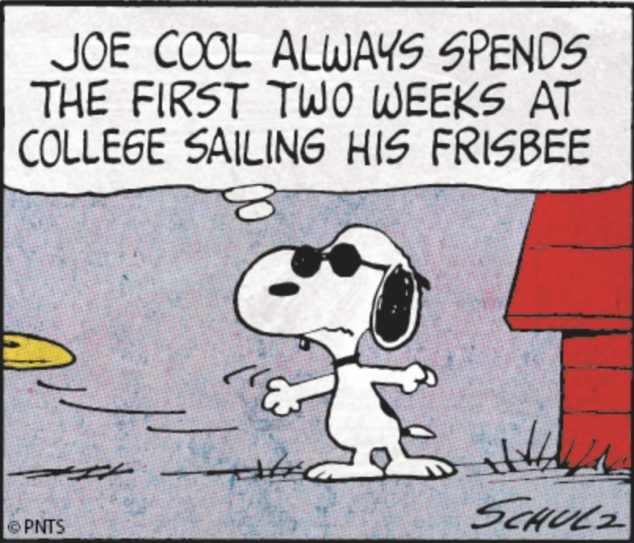
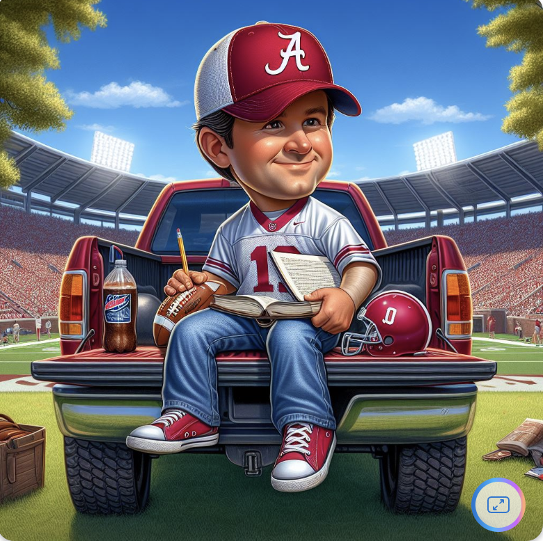
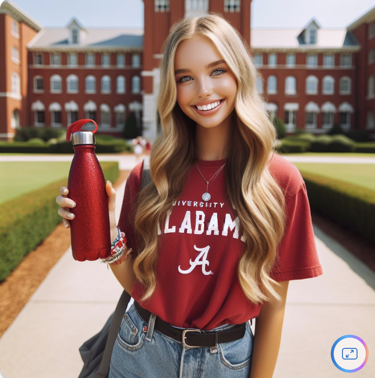

Envisioning College Stereotypes
One of my favorite clubs I’m in at Penn is the Kite and Key society, otherwise known as Penn’s tour-guiding group. Last week, I was giving a tour and was asked, “So what is the average Penn student like?” A million things came to mind; driven, ambitious, intelligent, creative– still, I wasn’t able to give an exact answer. I couldn’t conjure up an image of a “standard” Penn kid despite having very explicit images in my head of students at other schools like Alabama or USC. It was this inability to stereotype my student body that made me curious what AI thinks of when imagining students across different colleges; here are my findings!
A Sweeping Overview
To begin, I wanted to ask Microsoft Co-Pilot to generate fake students using its Dalle-3 integration at many different kinds of institutions.
Prompt: Please generate an image of a very stereotypical student at the University of Alabama.

Prompt: Please generate an image of a very stereotypical student at the University of Miami (Florida).
Prompt: Please generate an image of a very stereotypical student at Harvard University.
Prompt: Please generate an image of a very stereotypical student at Howard University.
Prompt: Please generate an image of a very stereotypical student at the University of Colorado at Boulder.
Prompt: Please generate an image of a very stereotypical student at the University of Pennsylvania.
Immediately I see that the schools with more well-known student profiles are being represented more stereotypically. The images of Harvard and Alabama leaned into their respective intense academia and American football aesthetics, showing that Co-Pilot is aware of the general categorization of these schools. The other examples, though, were slightly more vague and generally unimpressive. Penn and UMiami fit their general campus descriptions– brick buildings and palm trees respectively– and Boulder is seen sporting a more outdoorsy, hipster outfit, but these three are definitely less defined representations of the student bodies. To see how far I could lean into key stereotypes, though, I decided to take the prompting a step further with Harvard and Bama.
Digging Deeper
Prompt: Please generate an image of the most stereotypical Alabama student you can imagine. This person basically IS Alabama!

Prompt: Please generate an image of the most stereotypical Harvard student you can imagine. This person basically IS Harvard!
Honestly, Co-Pilot didn’t go as intense on these images as I would have anticipated, but it did truly lean into the stereotypes; Alabama is depicted by a thin white girl standing outside in the warm daytime, looking enthusiastic and full of school spirit. Harvard is back in the same large library surrounded by books (+ coffee to stay focused) and seems to be a woman of Middle Eastern descent, perhaps nodding to the diversity that exists within the Harvard student body. I did notice that every student has fair skin, and not one student besides the woman from Howard– an HBCU, or historically-black college or university– is Black, Asian, or Indigenous. I don’t know the reasoning behind this, an am additionally curious about why Co-Pilot represented every student as female except for Boulder and Alabama (initially); the only tie between those schools is that they are the two state schools I listed, but I am curious as to how that links to gender.
To investigate this concept from one more lens, I went to ChatGPT to see how it would verbally describe average students from Alabama and Harvard.
Checking in with ChatGPT
Prompt: Describe the average student at the University of Alabama.
Response:
Stereotypes can be harmful and misleading, as they often don’t accurately represent the diverse range of individuals within any given group. However, I can provide a generalized depiction of what might be considered a stereotypical student at the University of Alabama, based on common perceptions or media portrayals. It’s essential to remember that these descriptions may not apply to every student at the university.
A stereotypical student at the University of Alabama might be portrayed as:
Outgoing and social: They are often seen as friendly and outgoing, embodying the spirit of Southern hospitality. They may enjoy attending social events, tailgating at football games, and participating in Greek life activities.
Proud of their school: They exhibit a strong sense of school spirit and pride in being a part of the Crimson Tide community. They may be frequently seen wearing university-branded clothing and enthusiastically supporting their sports teams, especially football.
Active in Greek life: Many stereotypical students at the University of Alabama are involved in Greek organizations, such as fraternities and sororities. These groups play a significant role in campus social life, organizing events, philanthropic activities, and networking opportunities.
Fashion-conscious: There might be an emphasis on appearance and style, with students paying attention to trends in clothing, accessories, and grooming. Southern preppy fashion may be prevalent among some students, reflecting a blend of traditional and modern styles.
Academically focused: While they enjoy the social aspects of college life, stereotypical University of Alabama students are also committed to their studies. They strive for academic success and may pursue majors in fields such as business, engineering, education, or communication.
Sports enthusiasts: Football, in particular, holds a special place in the hearts of many University of Alabama students. They may have a deep knowledge of the team’s history, attend games regularly, and participate in tailgating traditions with friends and family.
Embracing Southern culture: Stereotypical students at the University of Alabama may embrace aspects of Southern culture, including traditions, cuisine, and values. They may have a strong connection to their hometowns and families, cherishing traditions passed down through generations.
It’s important to recognize that these characteristics represent a simplified and potentially exaggerated view of University of Alabama students. In reality, the student body is diverse, with individuals from various backgrounds, interests, and personalities. Stereotypes should not be used to make assumptions about any individual or group.
Prompt: Describe the average student at Harvard University.
Response:
Describing the “average” Harvard student is challenging because Harvard University is renowned for its diverse and highly selective student body. However, I can provide a generalized depiction based on common perceptions and characteristics often associated with Harvard students. It’s important to note that these traits may not apply to every student at Harvard, as the university prides itself on its diversity of backgrounds, interests, and experiences.
Academic excellence: Harvard students are typically known for their exceptional intelligence, academic achievements, and intellectual curiosity. They have demonstrated outstanding academic abilities throughout their academic careers, which is one of the reasons they were admitted to such a prestigious institution.
Ambitious and driven: Harvard students are often perceived as highly motivated individuals with ambitious goals and aspirations. They are driven to succeed academically, professionally, and personally, and they often seek out opportunities for growth and advancement.
Diverse interests and talents: Harvard’s student body is incredibly diverse, both in terms of cultural backgrounds and interests. Harvard students come from all over the world and bring with them a wide range of talents, passions, and experiences, whether in the arts, sciences, humanities, or other fields.
Leadership potential: Many Harvard students exhibit strong leadership qualities and have held leadership positions in their schools, communities, or extracurricular activities prior to attending Harvard. They are often involved in various student organizations, clubs, and initiatives on campus.
Critical thinking and analytical skills: Harvard students are known for their ability to think critically, analyze complex issues, and engage in rigorous intellectual discourse. They are encouraged to question assumptions, challenge conventional wisdom, and seek innovative solutions to global challenges.
High levels of achievement outside the classroom: In addition to excelling academically, Harvard students often pursue a wide range of extracurricular activities, including research, internships, community service, entrepreneurship, athletics, and the arts. They are committed to making a positive impact on their communities and the world around them.
Collaborative and supportive: Despite their individual achievements and ambitions, Harvard students are often collaborative and supportive of one another. They recognize the value of teamwork, cooperation, and diversity of perspectives in achieving their goals and addressing complex problems.
It’s important to recognize that these characteristics represent a broad overview and may not capture the full diversity and complexity of Harvard’s student body. Harvard students come from a wide range of backgrounds and have unique personalities, interests, and experiences that contribute to the vibrant and dynamic community at the university.
Yeah, these seem to be pretty spot-on with stereotypical depictions of each school’s student body! It’s really interesting to consider these sweeping descriptions, though, as there are obviously incredibly academic-focused students and Alabama (ie: students on prestigious full-ride merit scholarships there) and simultaneously people at Harvard who mainly focus on sports (ie: Student athletes on any of their D1 sports teams). I think that this exercise was helpful in revealing which schools are most stereotyped and confirmed the existence of such preconceived notions. While I still wouldn’t be able to describe the “average Penn student” to a member of one of my tours, this project might have taught me that that is for the best!